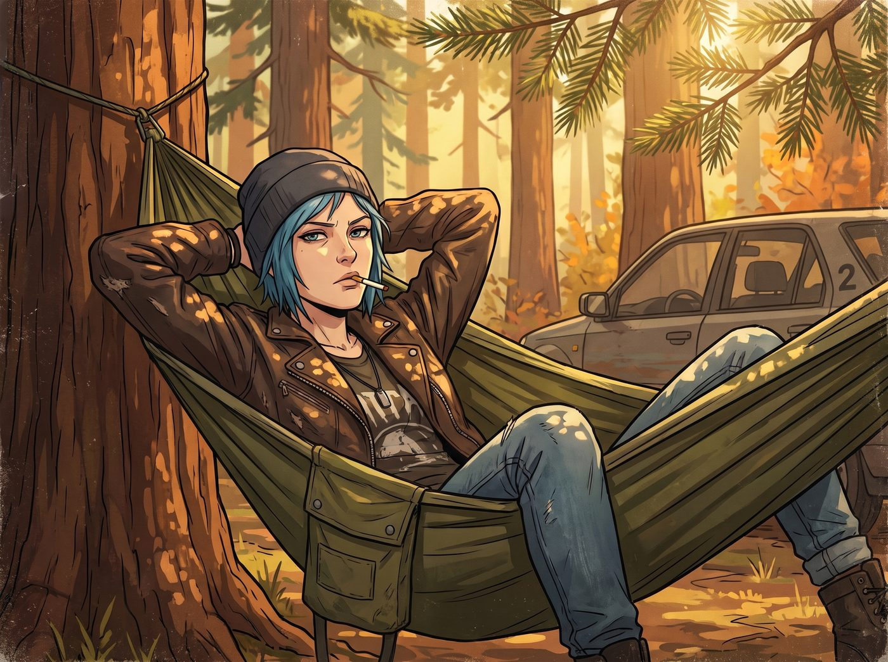
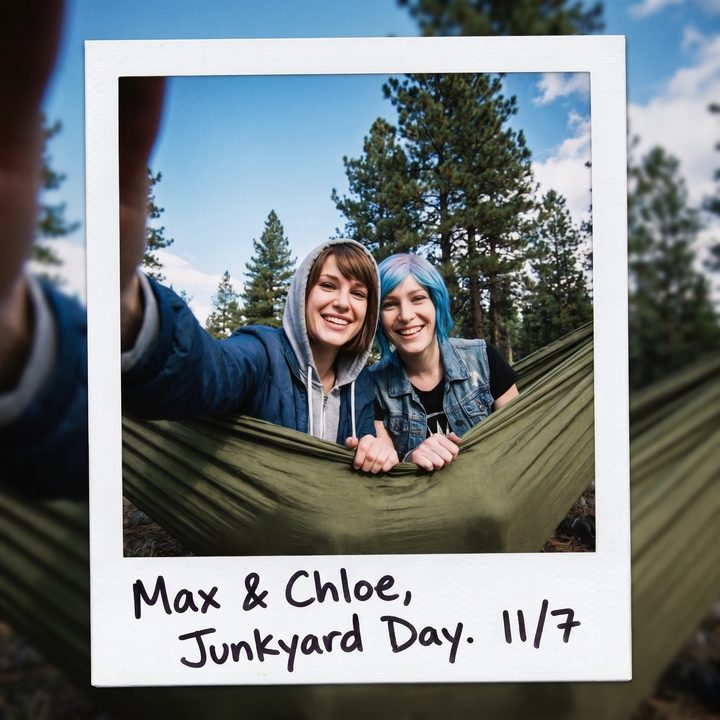

吊床上的既視感


十一月的奧林匹亞半島，難得迎來了一個沒有下雨、充滿陽光與微風的慵懶午後。
在二號車廂外，兩棵高聳的花旗松之間，Chloe 成功拉起了一張軍綠色的戰術吊床。
此刻，Chloe 正戴著她的灰黑色冷帽，雙手墊在腦後，嘴裡叼著一根沒點燃的萬寶路，一隻腳還掛在吊床邊緣輕輕晃悠。陽光透過松針的縫隙灑在她的皮夾克上，配上她那副不可一世的神情，這畫面簡直就是一本廢土龐克生活方式雜誌的封面。
一、吊床物理學
Max 拿著拍立得相機，站在樹下，圍著這張吊床轉了兩圈。
「Chloe，老實說，」Max 舉起相機，對著她在樹影斑駁中的側臉按下了快門，「這玩意兒是真的舒服，還是妳只是為了看上去像個隨時準備亡命天涯的瀟灑浪子而在硬撐？」
「哈，這妳就不懂了吧，超級麥克斯。」Chloe 睜開一隻眼睛，得意地笑了笑，拍了拍身下緊繃的尼龍布料：「吊床這東西，如果妳像根熱狗一樣直挺挺地躺在正中間，那它就是個刑具，妳的脊椎會被折成香蕉，而且血液全往腦袋裡湧，睡不到半小時就會頭皮發麻。」
她微微調整了一下姿勢，指著掛在樹幹兩端的綁帶給 Max 看：「關鍵在於物理學與幾何學的完美結合。首先，妳得把頭部那一端的綁帶掛得比腳部高出大約十五度，這樣血液就不會倒流，腦袋也不會發麻；其次，妳不能直著躺，妳得用對角線躺法。只要妳的身體和吊床中軸線形成三十度角，這塊布就會被妳撐平，妳的背會像睡在席夢思上一樣筆直。」
Chloe 舒服地嘆了口氣：「這可是我繼父唯一教過我、且真正有用的野外生存技巧。比睡在車廂的沙發上爽多了。」
二、擠進同一張布
Max 看著 Chloe 那副陷入極度放鬆狀態的樣子，好奇心終於戰勝了對摔個狗吃屎的恐懼。
「聽起來很科學。那……讓我也試試？」Max 把相機掛在脖子上，試探性地伸出一隻手。
「來吧，阿卡迪亞灣的睡神。」Chloe 往旁邊挪了挪，伸出那隻戴著鉚釘手套的手，一把抓住了 Max。
在經歷了一陣笨拙的搖晃、幾聲驚呼，以及 Chloe 無情的嘲笑後，Max 終於成功地爬進了吊床。兩個人為了保持平衡，不得不在狹窄的空間裡緊緊地擠在一起。Max 的肩膀貼著 Chloe 的皮夾克，能清晰地聞到她身上那股混合著機油、廉價菸草和松香的熟悉味道。
「稍微斜過來一點，對，把腳伸到邊緣。」Chloe 像個老手一樣指導著，「然後把頭靠在邊緣的布料上。」
Max 照做了。當她完全放鬆下來的那一刻，她驚訝地發現，Chloe 說的居然是真的。那種失重的懸浮感，加上布料完美貼合背部曲線的支撐力，舒服得讓人想立刻閉上眼睛。
三、複刻的清晨
Chloe 從口袋裡掏出手機，點開了一個熟悉的播放列表，將音量調小，然後把它放在了兩人頭頂的吊床邊緣。
吉他輕柔的撥弦聲響起，是那種帶著淡淡憂傷、卻又無比溫暖的獨立民謠。
陽光透過樹冠，在兩人的臉上投下搖曳的光斑。微風吹過，吊床像搖籃一樣發出極其輕微、極其緩慢的晃動。
Max 睜開眼睛，看著頭頂交錯的松樹枝椏和湛藍的天空。在這一瞬間，時間的流動彷彿被放慢了。Max 突然有了一種強烈的既視感。
這個畫面，這種氣味，這段旋律。完美復刻了當年她們在阿卡迪亞灣，Chloe 的那個貼滿海報的二樓臥室裡。那個早晨，她們並排躺在床上，聽著隨身聽，陽光透過百葉窗照進來，全世界的混亂、龍捲風、失蹤案和死亡預兆都被擋在門外。那時的她們，也是這樣漫無目的地盯著天花板，享受著最高級別的耍廢。
「嘿，Max。」Chloe 輕輕碰了碰她的胳膊，聲音在民謠的背景音中顯得有些慵懶。
「嗯？」
「我們現在這樣，算不算是合法的老年退休生活？」Chloe 輕笑了一聲，「沒有定時炸彈，沒有變態攝影老師，只有我們，還有一張在森林裡晃悠的破布。」
Max 嘴角勾起一抹溫柔的弧度。她沒有說話，只是輕輕把頭靠向 Chloe 的肩膀，任由吊床帶著她們在微風中輕輕搖擺。
這是一個不需要超能力，不需要時間回溯的高光時刻。只要兩個人並肩躺在一起，無所事事地浪費時間，就是這片森林裡最奢侈的浪漫。
四、匆匆路過的訪客
「打擾一下兩位學姐的高質量休眠。」
一個軟糯、毫無起伏的聲音，極其煞風景地從樹下傳來。
Max 和 Chloe 無奈地嘆了口氣，探出半個腦袋往下看。只見 Lily 正抱著她那台平板，站在吊床旁邊，推了推反光圓框眼鏡。
「根據我剛才導入的承重計算模型，」Lily 認真地看著螢幕上的數據，語氣像是在宣讀安全手冊，「這款戰術吊床的極限安全載荷為四百五十磅。兩位學姐目前的合併靜態重量大約在兩百六十五磅左右，處於絕對安全的區間。即便發生五級陣風導致的鐘擺效應，綁帶的抗拉扯強度也足以維持絕大部分的物理穩定性。」
Lily 抬起頭，露出一個純潔無暇的微笑：「所以，請兩位學姐安心地進行耍廢。我剛好路過確認一下安全性，就不打擾了。」
Chloe 聽完，忍不住笑了出來。她隨手從旁邊的樹枝上揪下一顆小松果，精準地砸在了 Lily 的平板電腦邊緣。
「少囉嗦，實習生。去給妳的 Victoria 學姐泡杯紅茶吧，別讓她出來對著我們的吊床發表老錢階級的審美批判。」
「遵命，Chloe 學姐。」Lily 乖巧地點了點頭，抱著平板，像個沒有感情的安全衛士一樣，踩著落葉走回了車廂。
看著 Lily 離開的背影，Max 重新躺平。她舉起拍立得，將鏡頭反轉，對準了自己和 Chloe，還有她們背後那片湛藍的天空與松樹林。
「咔嚓。」
照片裡，兩個女孩擠在一張軍綠色的吊床裡，雖然看上去有些擁擠，但臉上的笑容，卻比阿卡迪亞灣的任何一個清晨都要輕鬆。